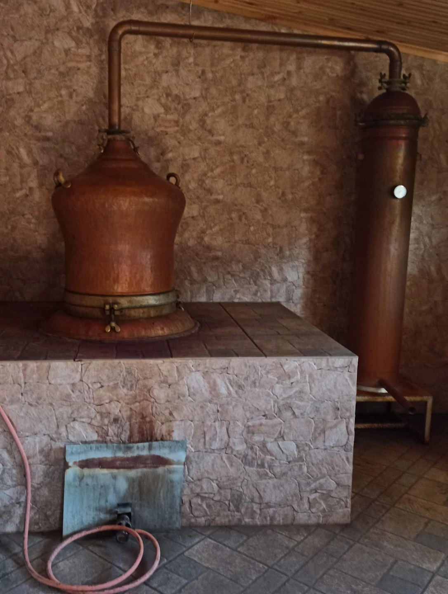
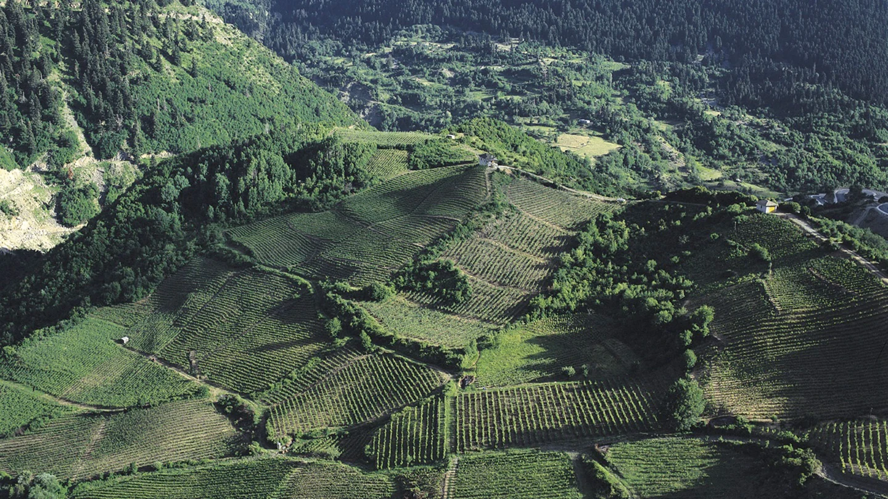

Το φθινόπωρο έχει και ήχους: μια αυλή που γεμίζει κουβέντες, εργαλεία που μετακινούνται, ανθρώπους που βρίσκουν αφορμή να συναντηθούν. Τα καζάνια του τσίπουρου ανήκουν σε αυτή την εποχική μνήμη πολλών ηπειρώτικων χωριών. Η ιστορία τους συνδέει το αμπέλι με την οικονομία του σπιτιού και την εργασία με την παρέα.
Η χρονιά του αμπελιού συνεχίζεται
Το τσίπουρο ανήκει στα αποστάγματα στεμφύλων σταφυλής. Η πρώτη ύλη προέρχεται από την επεξεργασία του σταφυλιού και ακολουθεί τη δική της διαδρομή ζύμωσης και απόσταξης. Ο τεχνικός του φάκελος διακρίνει τα χαρακτηριστικά του προϊόντος και τον ρόλο της πρώτης ύλης και της παραγωγικής πρακτικής.[1]
Αυτή η συνέχεια του τρύγου εξηγεί γιατί το καζάνι εντάσσεται στον κύκλο των αγροτικών εργασιών. Η αξία δεν βρίσκεται μόνο στο τελικό ποτό. Βρίσκεται και στην προσπάθεια να αξιοποιηθεί η παραγωγή, στη γνώση που μεταφέρεται και στην οργάνωση που απαιτεί κάθε εποχή.

Ένα καζάνι για περισσότερα σπίτια
Σε τοπική αναδρομή για χωριά από το Σούλι ως τη Μουργκάνα περιγράφονται παλιότερα καζάνια που λειτουργούσαν πολλές ημέρες και εξυπηρετούσαν το χωριό. Η εποχική εργασία συνδεόταν με την αποθήκευση αγαθών για το σπίτι, αλλά και με συναντήσεις συγγενών και φίλων.[2]
Η εικόνα αυτή μας επιτρέπει να σκεφτούμε την πλευρά της συνεργασίας. Πίσω από τη συγκέντρωση υπάρχουν χρόνοι, συνεννοήσεις και άνθρωποι που γνωρίζουν τη δουλειά. Το καζάνι, ως αντικείμενο, θυμίζει ότι η κοινωνική ζωή συχνά βρίσκει χώρο γύρω από μια παραγωγική ανάγκη.
Η παρέα έχει τη δική της μνήμη
Η ίδια καταγραφή αναφέρεται σε μεζέδες, τραγούδια και κουβέντες γύρω από την απόσταξη. Πρόκειται για τοπική περιγραφή, όχι για απόδειξη ότι κάθε χωριό και κάθε οικογένεια ακολουθούσε την ίδια συνήθεια. Οι ονομασίες, οι χρόνοι και οι τρόποι συνάντησης μπορούν να διαφέρουν.[2]
Για κάποιον που θυμάται αυτές τις ημέρες, η πρώτη εικόνα ίσως να μην είναι το καζάνι. Μπορεί να είναι ο συγγενής που ερχόταν πάντα να βοηθήσει ή μια κουβέντα που συνεχιζόταν ώσπου να βραδιάσει. Τέτοιες αναμνήσεις αξίζει να διασώζονται με τον τόπο και τα ονόματά τους, ώστε να παραμένουν συγκεκριμένες.
Η Ήπειρος του αμπελιού
Η αμπελουργική όψη της Ηπείρου περιλαμβάνει τη Ζίτσα και τη Ντεμπίνα, την ποικιλία που συνδέεται με τα λευκά κρασιά της περιοχής, αλλά και τους ορεινούς αμπελώνες του Μετσόβου. Οι διαφορές των τόπων και των προϊόντων αποτελούν μέρος μιας ευρύτερης γαστρονομικής ιστορίας.[3]

Το αφιέρωμα στα καζάνια ακολουθεί την κοινωνική μνήμη αυτής της εργασίας. Για να τη γνωρίσουμε καλύτερα, μπορούμε να αναζητήσουμε παλιές φωτογραφίες και να ρωτήσουμε ποιος είχε το καζάνι, ποιοι συμμετείχαν, πότε άρχιζε η προετοιμασία. Ένα χρηστικό αντικείμενο αποκτά τότε τη θέση του μέσα στη ζωή της κοινότητας, μαζί με τις φωνές που κάποτε το περιέβαλλαν.